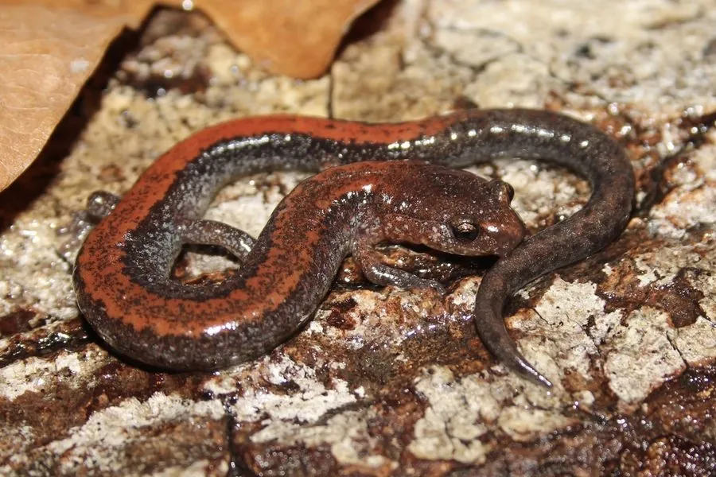

两栖动物 · 动物界
北美红背蝾螈 Plethodon cinereus

北美洲东部森林常见的无肺蝾螈，背部有一条红褐色纵纹，完全靠皮肤呼吸，在落叶层中直接发育，没有水生幼虫阶段。
- 分类
- 门脊索动物门纲两栖纲目有尾目科无肺螈科属红背蝾螈属
- 栖息环境
- 北美洲东部落叶林的潮湿落叶层、腐木和石块下
- 地理分布
- 加拿大东南部和美国东部
- 保护级别
- IUCN 无危（LC）；非中国原产，在中国无保护级别
物种志
北美红背蝾螈体长 6–10 厘米，身体细长，皮肤光滑湿润；常见色型背部呈黑色或深灰色，中央有一条红褐色或橙红色纵纹，两侧颜色较深，腹部有黑白相间的斑驳；另有“铅背型”个体，背部整体呈深灰色而没有红纹。它没有肺，完全依靠皮肤和口腔黏膜呼吸。
它广泛分布于北美洲东部的落叶林，栖息于潮湿的落叶层、腐木和石块下，夜间和雨后活动，捕食昆虫、蜘蛛、蚯蚓和螨虫。与多数两栖动物不同，它没有水生幼虫阶段，卵产在潮湿的落叶或腐木下，幼体在卵内直接发育为小型成体。北美红背蝾螈是森林落叶层中数量最多的脊椎动物之一，对维持土壤生态和食物网有重要作用。
形态与习性
- 食性昆虫、蜘蛛、蚯蚓和螨虫
- 体长约 6–10 cm
- 呼吸无肺，完全靠皮肤呼吸
- 繁殖卵产于落叶或腐木下，直接发育，无水生幼虫
- 活动节律夜行性，雨后活动频繁
- 色型红背型与铅背型两种常见色型
趣味知识
- 北美红背蝾螈没有肺，靠湿润的皮肤直接从空气中吸收氧气。
- 它没有水生幼虫阶段，幼体在卵内直接发育成小蝾螈。
- 同一片森林里既有红背型也有铅背型，颜色差异由基因决定。